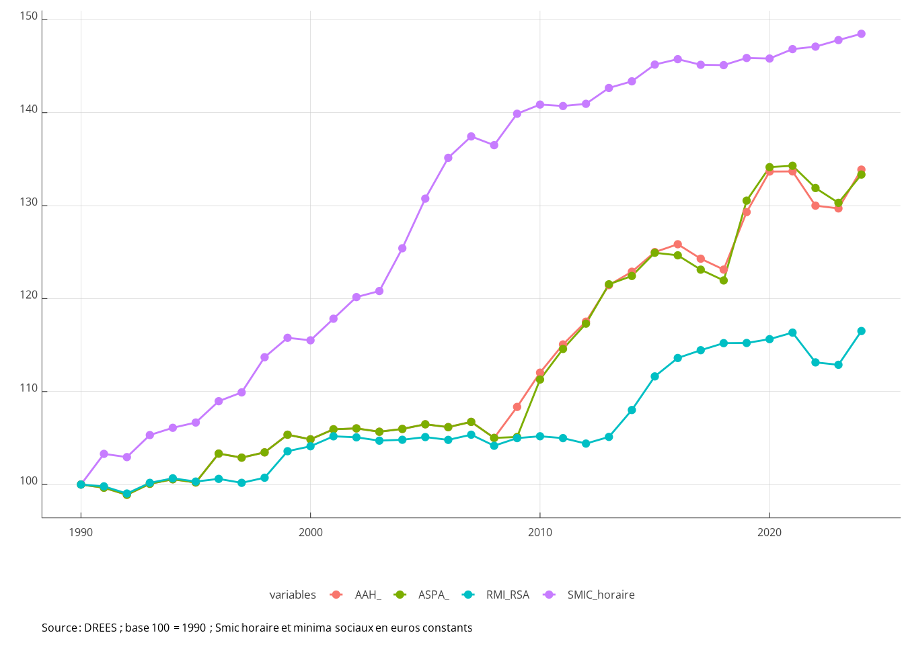

La reprise d’emploi est-elle toujours rémunératrice?
Si oui, quel est le vrai problème ?
Abstract
Depuis les réformes visant à permettre aux personnes de cumuler revenus professionnels et prestations sociales, la reprise d’emploi est toujours rémunératrice, masi elle ne permet pas toujours de sortir de la pauvreté. Cela s’explique notamment par le fait que le revenu minimum garanti aux personnes d’âge actif est très faible et maintient la plupart du temps les personnes sans emploi sous le seuil de grande pauvreté : le travail paie, mais les travailleurs partent de trop bas.
Keywords
Assistance, Prime d’activité, Trappes à inactivité, Incitations à l’emploi
Introduction : les objectifs de la lutte contre la pauvreté par l’emploi
Y a-t-il de bonnes raisons de reprendre un emploi payé au salaire minimum quand on touche des prestations sociales ? La question des gains liés à la reprise d’emploi est récurrente dans un contexte où les aides sociales sont critiquées pour leur trop grande générosité et où les politiques de tout bord insistent sur la valeur travail. Le travail doit payer, et bien plus que l’assistance.
C’est ce qu’a encore demandé le Premier ministre le 3 octobre 2024 sur France 2. “Il faut que le travail paie plus que l’addition des allocation” a déclaré Michel Barnier, qui entend lancer le “chantier de l’allocation sociale unique”, afin que “cela paye plus de travailler que de ne pas travailler”. La stratégie nationale de prévention et de luttre contre la pauvreté (SNPLP), publiée en 2018 était même plus précise, puisqu’un des objectifs, alors assigné à un “revenu universel d’activité” est de “faire en sorte que le travail paye et qu’il paye de la même façon dans tous les cas”. Nous verrons que le travail est certe rémunérateur, mais qu’il paye différemment selon la situation familiale.
Un deuxième objectif donné aux politiques de lutte contre la pauvreté est de faire en sorte que le travail sorte de la pauvreté. Cet objectif est inscrit dans la SNPLP (2018) soit “l’engagement d’une politique déterminée de sortie de la pauvreté par le travail”. S’il est implicitement admis que les peronnes sans emploi puissent vivre sous le seuil de pauvreté, être pauvre bien que travailleur, travailleur mais pauvre, est perçu comme une anomalie que les politiques publiques doivent corriger (Allègre, 2024).
Enfin un troisième objectif attribué aux politiques de lutte contre la pauvreté est de “garantir un soutien financier aux ménages modestes” (SNPLP, 2018). Dans la stratégie de lutte contre la pauvreté, cet objectif est le plus souvent lié aux enfants et aux familles. Un des objectifs est de “garantir l’accès de tous les enfants aux biens et aux services essentiels” ; l’affirmation “la stratégie pauvreté déploiera enfin des mesures concrètes et ancrées dans le quotidien des Français pour réduire les privations” est affirmé dans le chapitre nommé “garantir au quotidien les droits fondamentaux des enfants”. S’il est admis que les personnes sans emploi puissent petre pauvres, il ne faut pas que leurs privations soient trop sévères, en particulier losrqu’elles ont des enfants.
Plus généralement, “réduire les privations”, “garantir les droits fondamentaux” sont des objectifs qui concernent tout le monde, adultes et mineurs. Depuis 1946, le préambule de la Constitution affirme ainsi “Tout être humain qui, en raison de son âge, de son état physique ou mental, de la situation économique, se trouve dans l’incapacité de travailler a le droit d’obtenir de la collectivité des moyens convenables d’existence”. Toutefois la façon dont ce droit est écrit ne définit pas explicitement ces moyens convenables d’existence et ne dit pas s’ils doivent être procurés en nature (logement, santé, aide alimentaire…) ou en espèces. Alors que ce préambule date de 1946, le RMI n’a été mis en place qu’en 1989. Pour les foyers sans revenus, le RMI puis le RSA garantissent des niveaux de vie proches selon les configurations familiales, et en particulier selon la présence d’enfants ou non (graphique fig_xxx).
Pour résumer, la lutte contre la pauvreté repose sur au moins trois objectifs, régulièrement réaffirmés par les pouvoirs publics :
1. Faire en sorte que le travail paie ;
2. Faire en sorte que le travail fasse sortir de la pauvreté ;
3. Garantir à tous la couverture des besoins essentiels ou minimaux.
Les trois premières parties de ce document évaluent le système actuel par rapport à ces trois objectifs. Dans la quatrième partie, plus prescriptive, nous verrons ce qu’il faudrait faire si l’on veut atteindre simultanément ces trois objectifs (BOF).
1. La reprise d’emploi est toujours rémunératrice, mais pas toujours de la même façon.
1.1. Une analyse par cas-type
La reprise d’emploi est-elle rémunératrice ? Pour répondre à la question de façon concrète, nous raisonnons sur cas-type. Il s’agit d’illustrer les gains à la reprise d’emploi en prenant des exemples-type de situations de travail, de configuration familiale, de logement (pour calculer les allocations-logement) et de gardes (lorsqu’on calcule des frais de garde éventuelles). Dans ces situations, les gains à la reprise d’emploi, proviennent des salaires nets perçus et de la Prime d’activité. Les “coûts” proviennent de l’augmentation de l’impôt sur le revenu et de la baisse des prestations sociales (RSA, Allocations logement, allocations familiales…). La variable d’intérêt est le revenu disponible qui est calculé au niveau du ménage et ne tient pas compte de la répartition interindividuelle des revenus au sein des couples. L’analyse porte sur la variation du revenu disponible lorsqu’une personne passe de l’inactivité ou du chômage à l’emploi sans tenir compte des coûts à la reprise d’emploi en termes de transport ou d’habillement.
- Définition : taux marginal effectif de prélèvement
-
Outre la variation de revenu disponible du ménage, il est également possible de calculer un taux marginal effectif de prélèvement (TMEP) qui correspond à la part de l’augmentation du revenu professionnel qui est compensée par une hausse des impôts une une baisse des prestations et ne se traduit donc pas en augmentation de revenu disponible. Si lorsque le revenu d’activité augmente de 1000 euros, le revenu disposible n’augmente que de 600 euros, on dira que le TMEP est de 40%.
\[TMEP=1-\frac{\text{Variation du revenu disponible}}{\text{Variation du revenu professionnel}}\]
Le cas-type général commenté dans le texte est celui d’un ménage éligible, sous condition de ressources, au RSA (l’individu référent est âgé entre 25 et 64 ans) et aux allocations logement1 (le ménage est locataire du parc privé). Pour les ménages non éligibles à ces prestations, les presations sociales sont bien plus faibles, et les gains à la reprise d’emploi sont donc par construction beaucoup plus importantes. Pour les ménages avec enfants, nous supposons dans le cas général que les enfants sont d’âge scolaire (5, 8 ou 10 ans) mais la situation des familles ayant un efant en bas âge qui nécessite un mode de garde est étudiée dans l’encadré XX.
Trois situations de reprise d’emploi sont analysées : le mi-temps au smic horaire (699 euros mensuels), le temps-plein au smic horaire (1399 euros mensuels) et le temps plein à 1,5 smic horaire (2098 euros mensuels). Pour les couples, ces reprises d’emploi sont analysées dans le cas d’un conjoint inactif sans revenu, d’un conjoint chômeur (avec un montant d’allocation chômage égal au smic mensuel) et d’un conjoint en emploi à temps-plein gagnant le smic ou 1,5 fois le smic. L’analyse n’est pas genrée, mais dans les couples, ce sont le plus souvent les femmes qui prennent des emplois à mi-temps, à la fois parce que le partage des tâches reste très inégalitaire et parce qu’elles ont des emplois dans des secteurs où elles plus sont plus susceptibles d’être en temps-partiel subi. L’analyse est descriptive et ne présume pas que les ménages ou individus ont le choix entre les différentes combinaisons de travail. Comme son nom l’indique le salaire minimum constitue un plancher : 85% des salariés ont un salaire supérieur et pour ces salariés, les écarts de revenu disponible entre les personnes en emploi et les bénéficiaires du RSA sont plus élevés (ref Devetter & Valentin).
Les tableaux dynamiques permettent de tester plus de configurations.
1.2 Des reprises d’emploi rémunératrices
Dans les cas types étudiés, le système socio-fiscal actuel garantit que la reprise d’emploi est toujours rémunératrice, mais pas nécessairement toujours dans les mêmes proportions.
Le cas d’une personne seule illustre la façon dont le système socio-fiscal assure que le travail paie mieux que l’assistance, même pour de petites durées de travail. Sans revenus d’activité, cette personne peut percevoir 851 euros de prestations sociales (559 euros de RSA et 292 euros d’allocations logement), ce qui est juste en dessous du seuil de grande pauvreté à 40% du niveau de vie médian2.
Si cette personne reprend un emploi rémunéré au Smic, son revenu disponible augmente que l’emploi soit à temps partiel ou à temps plein, en dépit de la baisse du montant de prestations sociales. Avec un emploi à mi-temps, le revenu disponible est de 1 191 euros et le taux marginal effectif de prélevement (TMEP) est de 51,4%, ce qui veut dire que les ménages gardent en revenu disponible 48,6% de l’augmentation de leurs revenus d’activité (soit 340 euros sur les 699 euros de salaire reçu). Avec un emploi à temps-plein, le revenu disponible double quasiment (+94%) et atteint 1656 euros (soit une hausse de 805 euros) avec un TMEP de 42,5%. Si l’emploi à temps plein est rémunéré à 1,5 smic, le niveau de vie atteint 2 016 euros (hausse de 1 165 euros) et le TMEP est de 44,5%. commenter plus les variations de MS/PL/IR
Pour un couple avec deux enfants (âgés de 5 et 8 ans) initialement sans revenu et dont un des conjoints reprend un emploi à plein-temps, le gain de revenu disponible en euros est de 845 euros, soit un gain très proche de celui du célibataire sans enfant, et par conséquent un TMEP également similaire (40%). Si le gain en euro est similaire, ce couple a un revenu disponible plus important en situation d’inactivité (1 652 euros) et le gain relatif est donc moindre (+51%). De plus, ce couple comporte davantage d’unités de consommation que le célibataire et pour une augmentation équivalente du revenu disponible, le gain en niveau de vie est deux fois plus faible que pour le célibataire sans enfant (402 euros par UC). commenter plus les variations de MS/PL/IR
- Définition : niveau de vie
-
Le calcul du niveau de vie d’un ménage a pour objet de comparer les revenus disponibles de ménages de configuration différentes en tenant compte des économies d’échelle liées à la vie commune et des besoins des enfants. Il est obtenu en divisant le revenu disponible de l’ensemble du ménage par un nombre d’unités de consommation. En France et en Europe, les unités de consommation sont calculées par l’INSEE et Eurostat selon l’échelle d’équivalence dite de l’OCDE modifiée qui attribue 1 UC au premier adulte du ménage, 0,5 UC aux autres personnes de 14 ans ou plus et 0,3 UC aux enfants de moins de 14 ans (car considérés ayant moins de besoins).
La situation est un peu différente pour une personne en couple avec deux enfants si le conjoint est actif en emploi, rémunéré sur la base d’un Smic mensuel. Dans ce cas, le revenu disponible du couple avec deux enfants est de 2 497 euros en cas de monoactivité et la reprise d’emploi à temps plein au smic est plus rémunératrice car la dégressivité des aides est moindre. Le gain associé au second emploi dans le couple est de 911 € ce qui correspond à un TMEP de 35%. commenter plus les variations de MS/PL/IR
Enfin, si le conjoint est au chômage et perçoit une allocation d’un montant égal au Smic mensuel, le revenu du couple est de 1891 euros seulement lorsque la personne est inactive et de 2981 euros (+1090 euros) si elle travaille à temps plein au smic, ce qui correspond à un TMEP de 22%.
Le système social et fiscal remplit donc l’objectif qui lui a été fixé depuis la mise en place du RSA en 2009 : rendre le travail plus rémunérateur que l’assistance, de façon pérenne et pour toutes les reprises d’emploi. Toutefois les gains de reprise d’emploi ne sont pas homogènes, ce qui se voit en creux par la forte variabilité des taux marginaux effectifs de prélèvement. Mettre un graphique avec les TMEP de toutes les config pour un temps plein au smic (option mi-temsp et 1,5 smic) et refaire les commentaires. Dans les cas que nous étudiés, le taux varie de 6% pour le passage de la monoactivité à la biactivité d’un couple sans enfant, à 42% pour une personne seule passant de l’inactivité à l’activité à temps-plein. Le premier garde ainsi 94% de l’augmentation de ses revenus d’activité et le second 58%. Mais le premier est initialement beaucoup plus pauvre, et donc plus aidé. Le second cumule deux bonus individuels de prime d’activité.
- La prime d’activité
-
Depuis le 1er janvier 2016, la Prime d’activité a remplacé le RSA activité et la prime pour l’emploi. Comme les instruments qu’elle remplace, la prime d’activité vise deux objectifs : soutenir l’offre de travail grâce à des incitations financières accrues et compléter les revenus des travailleurs ayant des revenus modestes. La prime pour l’emploi et le RSA activité ont été critiqués pour leur faible efficacité. Individualisée, la prime pour l’emploi versait de faibles montants à de nombreux bénéficiaires : trop faible pour être véritablement incitative, elle bénéficiait de plus à des ménages à niveau de vie intermédiaire et non aux plus modestes. Le RSA activité tenait compte de la composition et du revenu du ménage : il était davantage ciblé sur les travailleurs pauvres et créait des incitations à la reprise d’emploi substantielles et contemporaines. Néanmoins, son efficacité était minée par un non-recours élevé (68 %).
La prime d’activité est proche dans son fonctionnement du RSA activité : familialisée, versée mensuellement, après une déclaration trimestrielle de revenus, elle cible les travailleurs aux revenus modestes et conserve les incitations à la reprise d’emploi. Elle est en outre clairement identifiée comme une prestation à destination des personnes exerçant une activité, ce qui évite qu’elle apparaisse stigmatisante aux yeux de ceux qui la perçoivent. Par conséquent, le non-recours (pas d’estimations précises - donner ref pour approx) est probablement bien plus faible que celui qui était observé pour le RSA activité.
La formule de calcul de la prime d’activité est la suivante :
Prime d’activité du foyer = Montant forfaitaire qui dépend de la situation familiale + bonus d’activité individuels - (forfait logement + prestations familiales + autres minima sociaux) - 39 % des revenus professionnels - 100 % des revenus non professionnels Le montant de la prime d’activité versée au foyer est nul si le résultat de ce calcul est inférieur à 15 euros.
Si elle permet de garantir des gains entre inactivité et revenus du travail dans presque toutes les configurations, la prime d’activité a des limites. Par rapport à une hausse du Smic, c’est une prestation sociale et pas un salaire donnant des droits sociaux (chômage, retraites). Comme la formule le montre, les revenus non professionnels du foyer sont déduits à 100%. Dans un couple, si l’un des conjoints perd son emploi pour du chômage indemnisé, non seulement il perd son bonus d’activité individuel, mais son chômage est déduit de la prime de son conjoint. Par conséquent, dans la plupart des cas, les ménages incluant un chômeur indemnisé (ou un retraité) ne touchent pas de prime d’activité . Enfin, bien que visant à lutter contre les trappes, les compléments de revenus pour travailleurs pauvres sont critiqués par les trappes qu’ils créent (au-dessus) : ciblés sur le temps-partiel, ils créent une trappe à précarité ; ciblés sur le temps-plein, comme la prime d’activité, ils renforcent la trappe à bas-salaire. En matière d’incitations, ces compléments ciblés dégressifs ne peuvent que creuser une nouvelle trappe pour en reboucher une : si la prime augmente l’écart entre emploi et avec chômage ou inactivité, elle ne peut que réduire le gain de niveau de vie permis par une hausse de salaire.
2. L’emploi ne protège pas toujours de la pauvreté monétaire.
Si l’emploi est toujours rémunérateur, il ne protège pas toujours de la pauvreté monétaire. Ceci apparaît clairement sur cas types mais peut se voir également par l’existence d’une pauvreté en emploi, même our des bénéficiaires de la prime d’activité3. En 2022, selon l’INSEE le taux de pauvreté sur l’ensemble de la population était de 14,4%. Le taux de pauvreté monétaire des personnes en emploi était de 7,7% et de xx% en se limitant aux allocataires dela prime d’activité. L’emploi réduit ainsi beaucoup le risque de pauvreté monétaire mais ne l’annule pas : sur les 9,1 millions de personnes vivant sous le seuil de pauvreté monétaire, 2 millions sont en emploi (INSEE). ajouter stats selon nombre d’emplois/quotité
- Définition : la pauvreté monétaire
-
D’après la statistique publique (INSEE, Eurostat), un individu est pauvre d’un point de vue monétaire, si le niveau de vie du ménage auquel il appartient est inférieur à 60% du niveau de vie médian. La pauvreté monétaire est ainsi un concept relatif : si le niveau de vie de tous les ménages augmente de 10%, la pauvreté monétaire reste stable. Par convention, le seuil de pauvreté monétaire est le même dans tout le pays, mais il varie au sein de l’Union Européenne d’un pays à l’autre. La pauvreté est définie par les revenus. La seule prise en compte des besoins se fait à travers la composition familiale (nombre d’individus et âge des enfants). Le niveau de vie ne prend ainsi pas en compte le coût du logement ni les besoins différenciés en transport, logement ou chauffage selon le lieu de vie.
Le dernier seuil de pauvreté publié par l’Insee est de 1216 euros par UC pour l’année 2022. Pour le comparer aux montants des prestations en 2024, nous avons appliqué à ce seuil l’inflation observée entre 2022 et juillet 2024, ce qui amène à un seuil de 1309 euros par UC.
Le niveau de vie d’un célibataire sans enfant sans revenus d’activité et recourant à toutes les prestations est de 851 euros/uc ce qui est inférieur de 35% au seuil de pauvreté monétaire : son intensité de pauvreté est donc de 35%. Un emploi à mi-temps au Smic ne lui permet pas de franchir le seuil de pauvreté (intensité de 9%). Le célibataire sans enfant franchit le seuil de pauvreté avec un Smic à plein temps (son niveau de vie atteint 126% du seuil).
Une personne isolée avec enfant(s) en emploi à plein-temps au Smic est au-dessus du seuil de pauvreté monétaire, qu’elle ait un enfant (125%) du seuil), deux enfants (119%), ou trois enfants (124%). Le système socio-fiscal permet donc bien de sortir les parents isolées de la pauvreté lorsqu’elles travaillent au Smic à temps plein. quid mi-temps ?
Les revenus d’un couple monoactif dans lequel l’un des conjoints travaille au Smic à plein-temps, et l’autre conjoint est en inactivité; permettent tout juste d’atteindre le seuil de pauvreté si le couple n’a pas d’enfant. Dans ce cas, le niveau de vie est égal à 100% du seuil de pauvreté. A ce niveau de revenus, le système social ne compense pas entièrement la charge des enfants, et le niveau de vie des couples monoactifs avec enfants est légèrement plus faible. Ces ménages ont donc des revenus qui les placent sous le seuil de pauvreté monétaire, avec une intensité de pauvreté de 7% s’ils ont 1 enfant, 9% avec 2 enfants, et 5% avec 3 enfants.
Les couples biactifs avec deux emploi au Smic à temps-plein ont un revenu disponible qui leur permet de dépasser le seuil de pauvreté monétaire. A ce niveau de revenus, le système fiscal et social ne compense que partiellement la charge des enfants telle qu’elle est appréhedée par les unités de ocnsommation. Un couple biactif au Smic a ainsi un niveau de vie équivalent à 142% du seuil de pauvreté s’il n’a pas d’enfant, 119% du seuil de pauvreté s’il en a un, 108% avec deux enfants et 110% avec trois.
réfléchir aux stats à produire avec l’ERFS ou INes
3. Le revers des incitations est l’augmentation de l’intensité de la pauvreté des personnes sans emploi.
Le niveau de vie des ménages sans revenus d’activité est faible, et a décru dans le temps. En outre, depuis xxxx, le niveau du minimum social en direction des personnes d’âge actif a progressé bien moins vite que le niveau du minimum vieillesse (ASPA) ou de l’allocation adulte handicapée (AAH) (graphique ou réf).
En 1989, la loi instaurant le RMI a pour principal objectif de donner un minimum social pour les personnes valides d’âge actif. Si l’objectif est principalement distributif, le législateur a néanmoins voulu préserver les incitations à travailler en fixant le niveau du RMI à 50 % du SMIC à temps plein . Les débats font alors apparaître la volonté de garder une norme d’emploi à plein-temps. Dans les années 1990, le nombre d’allocataires augmente rapidement et atteint un niveau non anticipé par les décideurs publics : de 500 000 allocataires en 1990, ce nombre dépasse le million en 1996. Face à cette montée rapide, le discours sur les « trappes à pauvreté » se répand. En 2001, l’introduction de la prime pour l’emploi (PPE) est une première réponse à ce discours. La PPE étant accusée d’être mal ciblée et de pénaliser les emplois à temps partiel, le RSA activité prend la relève en 2009 et permet de garantir que le revenu disponible d’un foyer augmente lorsque ses revenus d’activité augmentent, même à temps partiel ou très partiel. Il est ensuite remplacé par la prime d’activité en 2015, revalorisée lors de la crise des gilets jaunes pour les salaires proches du smic. Durant cette période d’attention aux gains à l’emploi et à la pauvreté laborieuse, le montant de base du RSA est peu revalorisé. citaton de Nicolas sur le paradoxe incitation/précarisation
Pourtant, malgré l’augmentation des gains à la reprise d’emploi via le creusement de l’écart entre le RSA et le SMIC et la montée en charge des compléments de revenus pour travailleurs pauvres, la part d’allocataires du RSA dans la population d’âge actif a augmenté, passant de 3,0% en 2008 à 4,1% en 2022. La réduction du niveau de vie relatif du RSA n’a donc pas eu d’effets visibles en termes de baisse du nombre d’allocataires.
4. Que faire si l’on prend la lutte contre la pauvreté au sérieux ?
Le système social et fiscal remplit donc l’objectif qui lui a été fixé depuis la mise en place du RSA en 2009 : rendre le travail plus rémunérateur que l’assistance. Mais avoir un emploi rémunéré au Smic n’est pas un gage de sortie de la pauvreté, et vivre sans emploi implique souvent d’être dans une situation de grande pauvreté. Que faire ? Une solution passe par la réglementation du marché du travail (à rediger)… Les pistes que nous explorons ici prennent comme donnése la structure des emplois offerts et le développement de l’auto-entreprenariat précaire et reposent principalement sur des aménagements de dispositifs actuels.
4.1. Augmenter le socle
Dans le système actuel, il est possible de concilier les trois objectifs - travail rémunérateur, travail permettant de sortir de la pauvreté et niveau de vie minimum suffisamment élevé - en relevant le montant des prestations de solidarité (RSA et aides au logement).
Le RSA pourrait être revalorisé de sorte qu’un foyer sans emploi atteigne 50 % du niveau de vie médian, soit 1 090 euros pour une personne isolée sans enfant, et 2 290 euros pour un couple avec deux enfants. Avec les aides au logement actuelles, pour la personne seule vivant en zone 2 (villes de plus de 100 000 habitants), cela amènerait le montant du RSA à 798 euros avant forfait logement (et xx€ après).
En conservant les incitations actuelles, par alignement du socle de la prime d’activité sur le RSA, cette revalorisation permettrait aux couples avec deux enfants de franchir le seuil de pauvreté monétaire avec un seul emploi au Smic à temps plein. Graphique illustratif
Dans le système actuel, le travail est plus rémunérateur que l’assistance car la prime d’activité compense le faible niveau du Smic horaire et la prévalence des emplois rémunérés en dessous du smic mensuel. Si les personnes en emploi restent pauvres malgré les allocations et les incitations… c’est qu’ils partent de trop bas.
4.2 Le Smic ou la prime d’activité ?
Faut-il privilégier le soutien aux bas-salaires via le Smic, ( enlever éventuellement compensé par des exonérations de cotisations, ) ou via la prime d’activité, et notamment les bonus individuels ?
La prime d’activité n’est pas un salaire :
Le salaire est totalement individualisé : le bénéfice de la prime our un travailleur à bas salaire dépend de la composition de sa famille, du montant et de la nature des revenus de son conjoint
Le salaire est le plus souvent prévisible, au moins un minorant du salaire (en présence d’heures supplémentaires ou de part variable) : les travailleurs peuvent difficilement révoir le montant de la prime d’activité compte tenu de son mode de calcul et des risques d’indus et rappels.
le salaire procure des droits sociaux : le taux de remplacemet au chomage ou à la retraite est réduit pour les bénéficiaires de la prime
Il y a 2 objectifs. Le premier objectif est la redistribution, la lutte contre la pauvreté et la réduction des écarts de niveaux de vie, par construction familialisée. Le deuxième objectif est le soutien aux bas-salaires, dans une logique de mérite, par construction individualisé. L’hybridation de ces deux logiques, la lutte contre la pauvreté laborieuse, crée des situations paradoxales car la pauvreté suit une logique familiale et le travail est individuel (Allegre, xxxx ; Ponthieux xxxx). idée : renvoyer à l’origine des prestations familiales avec les sursalaires familiaux : l’emploi permet aux travailleurs sans enfant de vivre décemment (modèle couple monoactif), les PF compensent les charges d’enfant (pour éviter une hausse généralisée des salaires sous la pression des travailleurs avec enfants)
Si l’on donne un poids à l’objectif de réduction de la pauvreté laborieuse, au-delà de celui que l’on donne à l’objectif de réduction de la pauvreté, alors il est préférable que certains pauvres ne travaillent pas (puisque le fait qu’ils travaillent augmentent la pauvreté laborieuse). Si l’on préfère toujours que les pauvres travaillent plus alors l’objectif n’est pas la réduction de la pauvreté laborieuse mais la réduction efficiente de la pauvreté. La réduction est efficiente dans la mesure où l’emploi réduit le coût de la redistribution pour les contribuables.
S’il y a 2 objectifs distincts, alors selon le principe de Tinbergen, il faut affecter prioritairement à des instruments distincts la poursuite de ces objectifs. D’une part, le RSA et une prime d’activité entièrement familialisée doivent poursuivre l’objectif de lutte contre la pauvreté et les inégalités de niveau de vie. Dans cette architecture, il faudrait réfléchir à étendre le bénéfice de la prime d’activité aux chômeurs (les travailleurs sans emploi). D’autre part, le Smic doit être l’instrument monétaire privilégié de soutien aux bas-salaires. Mais si l’objectif est la lutte efficiente contre la pauvreté, alors il faut éviter que les entreprises reposent sur le système social pour proposer des emplois qui ne seraient pas viables par ailleurs (voir Devetter, Pucci et Valentin 2020 et la section suivante).
parler de l’instabilité et de l’avantage qu’avait la PPE : presta sur base fiscale sans risque d’indus (sauf fraude et ceux qui demandaient la mensualisation)
4.3 Quelle place pour le temps partiel ?
Faut-il cibler les compléments de revenus pour travailleurs au niveau du temps-partiel ou du temps-plein ? Posé comme cela, le problème est insoluble : pour protéger de la pauvreté, il vaut mieux inciter au temps-plein ; mais pour réduire directement la pauvreté laborieuse, il vaut mieux donner plus aux travailleurs à temps-partiel, qui ont des niveaux de vie plus faibles. En réalité redistribution et incitations sont des objectifs contradictoires : la redistribution implique de réduire les écarts de revenus disponibles entre non-emploi, emploi et emploi mieux rémunéré, tandis que l’incitation implique de les maintenir ou de les augmenter.
S’ajoute un autre objectif : le mérite. Selon cet objectif, l’augmentation des revenus d’activité doit s’accompagner d’une augmentation du revenu disponible, même en l’absence d’impact incitatif en termes d’emploi. Il est probable que beaucoup d’acteurs ont cet objectif en tête lorsqu’ils défendent l’idée que le travail doit payer (Allègre, 2011). précise ta pensée
Le problème est que créer un écart de revenus à la fois entre l’inactivité et le mi-temps et entre le mi-temps et le temps-plein est probablement une des raisons de la dévalorisation du socle. En 1989, la norme d’emploi était le CDI à temps-plein, et le niveau du RMI a été choisi pour créer un écart avec l’emploi au Smic à temps-plein (il a été fixé en décembre 1988 à 50% du Smic à temps-plein). La prestation était différentielle : après période d’interessement temporaire (à préciser), chaque euro de revenus supplémentaires se déduisait à 100% du revenu versé. Cela veut dire qu’à terme une personne seule reprenant un emploi à mi-temps n’avait aucun gain financier. Les gains étaient concentrés entre le mi-temps et le temps-plein. Pourtant, il y avait des reprises d’emploi à temps partiel et même du cumul RSA-emploi (ref Petour Zajdela par exemple)
Faut-il revenir à une prestation différentielle ? Une possibilité est de revenir au système du RMI, qui permet à la fois un socle plus élevé et de réaffirmer le temps-plein comme norme de travail. Le problème est que cette norme s’est dégradée et qu’il est peut-être préférable de la renforcer, non pas avec des mesures qui visent les travailleurs et l’offre de travail, mais avec des mesures qui visent les entreprises. A préciser
Il faut donc réaffirmer le droit à un travail à temps-plein et lutter contre le travail à temps-partiel contraint. Comment ? Devetter, Pucci et Valentin montrent que le Smic n’est pas une protection suffisante contre la pauvreté des travailleurs, du fait du temps partiel contraint dans des métiers dont le taux horaire est faible. Le seuil de bas salaire mensuel (défini à 60% du salaire médian) étant proche du Smic mensuel, par construction les bas salaires manquent d’heures dans le mois par rapport à un temps-plein. Les métiers les plus touchés par les bas salaires sont les métiers du care, assistantes maternelles, aides à domicile (66% de bas salaires), les métiers du nettoyage (47%), les métiers de l’hottellerie-restauration (50%). Ces trois secteurs concentrent 43% des bas-salaires mensuels. Or ces professions concentrent forte amplitude de la journée de travail et faible densité de la journée de travail :
Footnotes
On suppose que le ménage est locataire en zone 2 des aides au logement (ville moyenne) pour un loyer compris entre 1 et 2,5 fois le loyer plafond.↩︎
Son niveau de vie équivaut à 39% du niveau de vie médian.↩︎
Si la prime d’activité permet à certains foyers de franchir le seuil de pauvreté monétaire, l’analyse par cas types montre que certains foyers à bas salaire n’y sont pas éligibles. S’y ajoutent ceux qui ne recourent pas à cette prestation bien que leur niveau de vie soit inférieur au seuil de pauvreté monétaire.↩︎